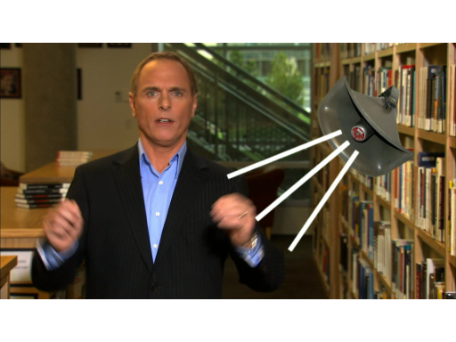

Shows - But Why?
Shows - But Why?
Hard to find answers for mysterious questions about Microsoft.
No Network Activity Indicator in Windows 7: But Why? [0:01:44] [2010/11/30] Microsoft is full of oddities and little known answers to mysterious questions. The purpose of this series is to seek out those answers and offer them to you. Please comment with other questions…
That's called a Giblet: But Why? [0:01:23] [2010/07/28]Microsoft is full of oddities and little known answers to mysterious questions. The purpose of this series is to seek out those answers and offer them to you. Please comment with other questions you'd…
Windows is named Windows : But Why? [0:02:18] [2010/04/27]Microsoft is full of oddities and little known answers to mysterious questions. The purpose of this series is to seek out those answers and offer them to you. Please comment with other questions you'd…
There is no Office 13 - But Why? [0:01:08] [2010/02/26]Microsoft is full of oddities and little known answers to mysterious questions. The purpose of this series is to seek out those answers and offer them to you. Please comment with other questions you'd…
The Outlook calendar starts in 1601 - But Why? [0:00:53] [2009/12/10]Microsoft is full of oddities and little known answers to mysterious questions. The purpose of this series is to seek out those answers and offer them to you. Please comment with other questions you'd…
The Notepad Bug - But Why? [0:00:57] [2009/10/07]In NotePad there is a little known bug that results from typing some strange sentences - want to know why? Please comment with other questions you'd like to get answered!
Watch other episodes of But…
Folder naming errors- But Why? [0:01:09] [2009/09/30]Microsoft is full of oddities and little known answers to mysterious questions. The purpose of this series is to seek out those answers and offer them to you. Please comment with other questions you'd…